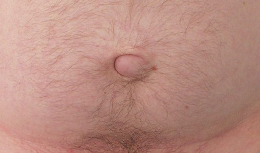
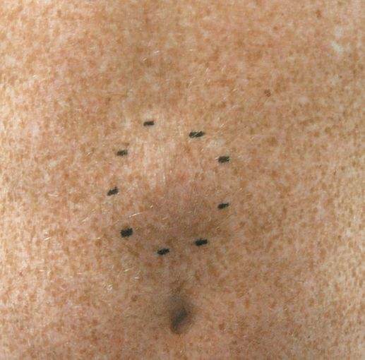
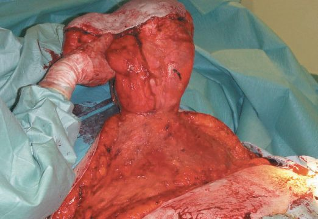
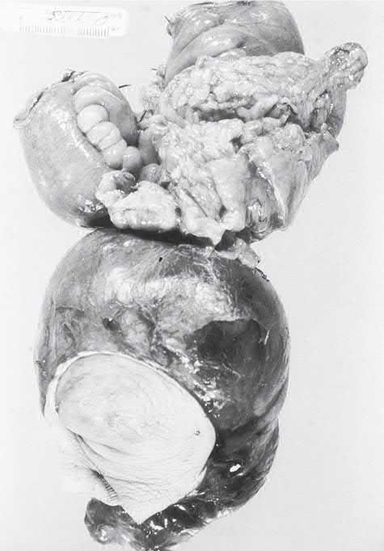

Umbilical and Epigastric Hernia
Summary
- Umbilical and epigastric hernias are "primary" or "spontaneous" ventral hernias arising through natural areas of weakness in the linea alba, the umbilical cicatrix and the midline raphe between the xiphoid and umbilicus, respectively [1][2].
- Umbilical hernia is extremely common in infants, most of whom resolve spontaneously, while in adults both umbilical and epigastric hernias are acquired lesions related to raised intra-abdominal pressure, obesity, and pregnancy [3].
- Small defects with a narrow neck carry a real risk of incarceration and strangulation despite their innocuous appearance, and current evidence favours mesh reinforcement even for many small defects [1][2].
- No NICE guidance of any kind covers umbilical or epigastric hernia repair.
- NICE was referred a clinical guideline on the diagnosis and management of hernia by the Department of Health in March 2015, deferred it in June 2015 to prioritise another topic, and discontinued it on 21 February 2018, recording that it is "not currently planned to be recommissioned" [4].
- The one UK national recommendation that bears directly on an umbilical hernia decision comes from hepatology rather than surgery: the British Society of Gastroenterology ascites guideline addresses umbilical hernia in cirrhosis [5].
Definition
An umbilical hernia is a protrusion through the umbilical ring or immediately adjacent linea alba (the latter sometimes historically termed "paraumbilical," though current guidelines classify any hernia in the immediate vicinity of the umbilicus as umbilical) [2]. An epigastric hernia is a protrusion through the linea alba anywhere between the xiphoid process and the umbilicus [2][3].
- Browse's keeps the older distinction, which remains the clearest way to understand what is palpated.
- A true umbilical hernia comes through the umbilical scar itself, with the umbilical skin tethered to it; it is uncommon in adults and is usually secondary to raised intra-abdominal pressure from pregnancy or ascites.
- A paraumbilical hernia (the common acquired adult lesion) appears through a defect adjacent to the umbilical scar, so it does not bulge into the centre of the umbilicus and the umbilical skin is not attached to the centre of the sac [6].
- A congenital protrusion of bowel through the umbilical defect without a covering of skin is an exomphalos: a failure of development of the abdominal wall, not a true hernia [6].
Pathophysiology
- The umbilicus is a natural point of weakness in the linea alba, technically a scar marking the site of passage of the umbilical vessels through the abdominal wall in utero; the fascial edges of the future defect develop by the third week of gestation, and the defect normally fuses after extra-abdominal intestinal rotation between the sixth and tenth weeks [3].
- Failure of this closure, or later stretching and reopening of a previously closed umbilical ring in adult life, produces a hernia [2][3].
- In adults, conditions that stretch and thin the midline raphe (pregnancy, obesity, and liver disease with cirrhosis and ascites) predispose to reopening of the defect [2].
- Because the neck of an umbilical hernia is often narrow relative to the size of the sac, these hernias are prone to becoming irreducible, obstructed, and strangulated [2].
Epigastric hernias begin as a small transverse split in the midline raphe, producing an elliptical defect usually under 1 cm in diameter; they commonly contain only extraperitoneal fat that spreads out in the subcutaneous plane in a mushroom shape, and more than one defect may coexist along the linea alba, failure to identify a second defect at initial repair is the most common cause of apparent "recurrence" [2]. The defect is always exactly in the midline, but the sac and hence the palpable swelling may lie to one side [6].
- Although not a true hernia, since there is no fascial defect and no hernia sac, diastasis recti is progressive stretching of the linea alba leading to separation of the rectus abdominis muscles, and it manifests as a midline bulge frequently confused for a hernia [1].
- Divarication of the recti extends from xiphisternum to umbilicus and occasionally below; it may be seen in children in the first few years of life and usually disappears as the child grows, and it is seen in adults in women during and immediately after childbirth, where the defect closes as abdominal tone recovers but may become permanent after multiple pregnancies.
- The only clinical concern is appearance, because strangulation is impossible with such a wide-necked bulge [6].
Clinical features
Infants and children
- Umbilical hernias in infants appear within the first few weeks of life, enlarge with crying, and classically have a conical shape; they are equally common in both sexes but up to eight times more frequent in Black infants, and obstruction/strangulation is extremely rare below age 3 [2].
- Congenital umbilical hernias are more common in Afro-Caribbean people, rarely cause symptoms in the child, and are chiefly a source of parental anxiety; intestinal obstruction or irreducibility is extremely rare, and "tummy ache" attributed to the hernia is unlikely to be genuinely associated with it [6].
- They are usually hemispherical and overlie a palpable defect, soft, compressible, easy to reduce, reducing spontaneously when the child lies down and becoming tense when the child cries; an expansile cough impulse is invariable, and although the hernia may be sizeable the palpable defect is often small [6].
Adults
- In adults, umbilical hernias are seen more often in overweight men with a thinned, attenuated midline raphe or in postpartum women, and the bulge is often slightly off-centre, giving the umbilicus a crescent shape; women are affected more than men, with a female-to-male ratio of approximately 3:1 [2][3].
- Paraumbilical hernias usually develop in middle and old age, are more common in women, and are associated with parity and obesity; the umbilicus is pushed to one side and stretched into a crescent shape, and in a large hernia in an obese patient there may be a crescent-shaped pit too deep to clean, producing a foul-smelling discharge or a collection of dried sebaceous secretions known as an ompholith [6].
- Patients often complain of pain from tissue tension or intermittent obstructive symptoms, and in large hernias the overlying skin may thin, ulcerate, or (very rarely) rupture spontaneously [2].
- Sometimes the only symptom is pain and tenderness around the umbilicus, worse with prolonged standing or strenuous exercise, with the doctor finding the hernia [6].
Strangulation of an umbilical hernia occurs regularly, whether or not the patient had previously noticed it; because the usual contents are extraperitoneal fat or omentum, the contents may strangulate without bowel being obstructed or damaged [6]. If the hernia can be reduced, the firm fibrous edge of the defect in the linea alba is easy to feel [6].

Epigastric hernia
- Epigastric hernias can be very painful even when small, from partial strangulation of the fatty contents, are usually irreducible because of the narrow neck, and may mimic a lipoma [2].
- They occur more often in fit young men but also in older, overweight men and multiparous women [2].
- The patient complains of epigastric pain localised exactly to the site of the hernia but often does not notice the underlying lump; the pain is sometimes associated with eating, so the patient calls it "indigestion" and self-diagnoses peptic ulceration, a likely explanation being that the fatty hernia is nipped by the linea alba on leaning forward in the sitting position adopted at the dining table. When a patient complains of epigastric discomfort, palpate the abdominal wall very carefully before concentrating on deep palpation, because all the symptoms may be caused by a small fatty epigastric hernia [6].
- On examination these hernias feel firm, do not usually have a cough impulse, and cannot be reduced; it is sometimes impossible to distinguish them from lipomas, only the typical midline position suggesting the correct diagnosis [6].
Epigastric hernia is reasonably common in childhood, sometimes associated with divarication of the recti; a small hernia may be visible only intermittently, causing diagnostic uncertainty. Because strangulation of such a sac in a child is rare, it is safe to wait until the hernia is actually seen before discussing surgery, unlike inguinal hernia in a child, where operation may be indicated on the history alone [6].

Etiology
- Neonatal umbilical hernia results from delayed or incomplete closure of the umbilical ring after cord separation; risk factors include prematurity and family history, and incidence is higher in Black infants [3][7].
- Adult umbilical hernia is acquired and associated with pregnancy, obesity, ascites, chronic obstructive pulmonary disease, and persistent bowel distension or obstruction, any condition that repeatedly raises intra-abdominal pressure on an already vulnerable area [3].
- Epigastric hernias are believed to be largely acquired, related to previous surgery, trauma, or repeated straining/raised intra-abdominal pressure, and are rare in children [3].
- Abdominal distension usually causes a true umbilical hernia and can exacerbate a paraumbilical one, so underlying causes of distension should be sought on general examination [6].
Diagnosis
- Diagnosis is usually straightforward on physical examination: a soft, often reducible mass overlying or adjacent to the umbilicus (or, for epigastric hernias, in the midline between xiphoid and umbilicus), with the fascial defect frequently palpable [3].
- The patient should be examined both standing and supine; when standing, any abdominal wall asymmetry is documented, and when supine the patient is asked to perform a Valsalva manoeuvre and a straight bilateral leg raise to assess for fascial defects and the extent of abdominal wall weakness such as diastasis recti [1].
- Differential diagnoses at the umbilicus include an abdominal wall varix, granuloma, or a peritoneal tumour deposit (Sister Mary Joseph's nodule) [3].
- CT scanning can differentiate a true hernia from rectus abdominis diastasis, a separation of the rectus pillars with an intact aponeurosis that produces a similar midline bulge but is not a true hernia and does not require surgical correction [8].
- Ultrasound or CT can also help exclude a lipoma or other subcutaneous lesion in equivocal cases, and unusual or complex presentations of ventral hernia require CT imaging [1][9].
Scoring and Severity
Under the European Hernia Society midline classification, primary umbilical and epigastric hernias are mapped to defined zones (subxiphoid, epigastric, umbilical, infraumbilical, suprapubic) and graded by size, in the same system used for incisional hernias; it is the most accepted classification for clinical documentation [1]. No separate severity score exists, but defect diameter is the practical grading, because it is the variable that determines whether mesh is used and how much benefit mesh confers.
| Defect diameter | Evidence on mesh versus suture repair |
|---|---|
| Under 2 cm | Primary suture closure is a reasonable option for a primary umbilical or epigastric defect |
| 1-2 cm | Mesh still reduces recurrence, but the absolute risk reduction becomes small |
| 2-4 cm | Recurrence 9% with mesh versus 22% with suture repair |
| Under 4 cm (whole trial population) | Recurrence 4% with mesh versus 12% with suture repair (HR 0.31, 95% CI 0.12-0.80) |
Table reformats the randomised-trial and primary-repair figures [1]. A defect above 2 cm in a child is one of the triggers for earlier elective repair rather than continued observation [10].
Treatment and Management
Children
- In children, conservative management is appropriate under age 2 for an asymptomatic umbilical hernia, since 95% resolve spontaneously with parental reassurance; surgical repair is offered if the hernia persists beyond age 2-3 years, or according to some sources age 5 [2][7].
- Sabiston puts spontaneous closure at 80% and defers elective repair to around 5 years of age, noting that incarceration of an umbilical hernia in a child is extremely rare; earlier repair should be considered when the hernia enlarges over time or the fascial defect exceeds 2 cm, and if left alone these hernias tend to develop a large skin proboscis over 3 cm, giving poor postoperative cosmesis. Primary repair is always achievable in a child, and a prosthetic patch should never be considered [10].
- Browse's makes the same point from the natural-history side: the vast majority of congenital umbilical hernias resolve spontaneously in the first few years, but if a defect is still present at 4 years it is unlikely to close and operation is advised [6].
- Surgery in children is also indicated for incarceration or in a child with a ventriculoperitoneal shunt [7].
Adults
- In adults, surgery is advised when the hernia contains bowel, owing to the high risk of strangulation; small, asymptomatic hernias without bowel content may be observed but tend to enlarge and require surgery eventually [2].
- Umbilical hernia repair should generally be deferred during pregnancy unless the hernia is large, incarcerated, or significantly symptomatic, in which case surgery can be offered in the second trimester; women are advised to lose weight and strengthen abdominal tone post-partum, as many resolve within months without surgery [2][7].
- For small primary fascial defects (umbilical or epigastric, generally under 2 cm), primary suture repair without mesh is a reasonable option, but a randomized trial of umbilical hernias under 4 cm found significantly lower recurrence with mesh than with suture repair (4% vs 12%), with the absolute benefit of mesh increasing with defect size (2-4 cm defects: 9% vs 22% recurrence) [1].
Obesity
- Higher BMI is linked with increased hernia recurrence and wound complications, but the operative approach modifies that risk: minimally invasive surgery significantly reduces wound morbidity in obese patients undergoing hernia repair, and the International Endohernia Society gives a grade A recommendation that minimally invasive techniques should be preferred in obese patients [11].
- A propensity-matched study of small umbilical hernias under 4 cm compared simultaneous repair at sleeve gastrectomy (mean BMI 42.7 kg/m²) with delayed repair after weight loss (mean BMI 31 kg/m² at about 13.7 months) and found similar rates of recurrence and complications for both strategies [11].
- SAGES recommends a staged approach where possible, with primary closure for smaller hernias if concomitant repair is necessary [11].
Cirrhosis and ascites
- Umbilical hernia in the setting of cirrhosis and ascites is a special circumstance: any Child-Pugh classification (particularly B and C) confers substantially higher perioperative morbidity and mortality and higher recurrence and mesh infection risk, so elective repair should be reserved for progressively symptomatic hernias, with hepatology involvement, and fascial closure performed with fine continuous sutures to minimise the risk of postoperative ascitic leak [2].
- The incidence of abdominal wall hernia in cirrhosis is 20-40%, and a high-volume single-institution study found emergent cases carried 60% morbidity and mortality with a 10% 90-day mortality, against 27% morbidity and mortality and 3% 90-day mortality for non-emergent cases, which is the argument for offering elective repair in patients with a MELD score under 20 where possible, managed in high-volume hepatobiliary centres [1].
- Ascites should be managed with diuretics and large-volume paracentesis with adequate volume replacement as necessary [1].
The British Society of Gastroenterology gives one recommendation on this, and it is deliberately procedural rather than prescriptive: "Suitability and timing of surgical repair of umbilical hernia should be considered in discussion with the patient and multidisciplinary team involving physicians, surgeons and anaesthetists.", quality of evidence low, recommendation strong [5].
- The supporting text gives the UK numbers behind that framing.
- In the cirrhotic patient the incidence of abdominal wall hernia is 16%, rising to 24% in the presence of ascites, and more than half of these are umbilical.
- Such hernias progressively enlarge and are prone to ulceration of the overlying skin, incarceration, strangulation and rupture; non-operative management of a complicated hernia carries a reported mortality of 60-88% [5].
- The factors associated with mortality after repair are emergency surgery (OR 10.32, 95% CI 3.66 to 47.82), Child-Pugh-Turcotte class C (OR 5.52, 1.67 to 32.45), ASA score of 3 or more (OR 8.65, 3.65 to 87.23) and MELD score of 20 or above (OR 2.15, 2.71 to 32.68); a retrospective series of 102 repairs in the presence of ascites, of which 45 were emergencies, reported 37.2% morbidity and 3.9% mortality.
- Optimising ascites management, including large-volume paracentesis and TIPSS perioperatively, could reduce the risk of wound dehiscence and hernia recurrence [5].
- Where this diverges from the textbook.
- Bailey & Love advises reserving elective repair for progressively symptomatic hernias; the BSG evidence points the other way, because the mortality of not operating on a complicated hernia (60-88%) far exceeds the mortality of an elective repair, and emergency surgery is the single strongest predictor of death.
- The BSG's answer is not a threshold but a process: the decision belongs to a multidisciplinary team, not to the surgeon or the hepatologist alone [5].
Surgeries
Open umbilical hernia repair (small defects), a short curvilinear incision is made just below the umbilicus, the sac is dissected, opened, and its contents reduced or the sac inverted; the fascial defect in the linea alba is closed with interrupted, slowly-absorbable or non-absorbable sutures, and the umbilical skin is tacked to the fascia [2][3]. Primary repair means suture closure of a fascial defect without a mesh prosthesis, and is the technique typically used for a primary umbilical or epigastric defect under 2 cm; it should otherwise be avoided for incisional hernias, and is reserved for settings of contamination or emergency where mesh may be ill-advised [1].
Mayo "vest-over-pants" repair, an overlapping fascial closure technique, historically popular for defects up to 2 cm, but now used less often since overlapping closures have been shown to weaken overall repair strength compared with simple fascial apposition [2][3].
Darn repair, a non-absorbable monofilament suture is criss-crossed across a small defect and anchored to the surrounding fascia, an alternative for very small (<1 cm) defects [2].
Open mesh repair, for larger defects (generally >2 cm) or when fascial closure would be under tension, a synthetic mesh is used as an overlay or, for larger defects, a composite mesh with a protective bioabsorbable coating is placed as an underlay with 4-5 cm fascial overlap; mesh cones are no longer recommended owing to risk of migration and recurrence [3].
Laparoscopic repair (umbilical/epigastric), ports are placed laterally away from the defect; the falciform ligament (and, below the umbilicus, the median umbilical fold) is taken down to create a smooth surface, and a non-adherent, intraperitoneal-rated mesh disc is placed on the undersurface of the abdominal wall with wide overlap and fixed with tacks, staples, or sutures; full reduction of fatty hernia contents is essential to avoid leaving a palpable residual lump [2]. This approach carries fewer wound complications than open repair and is favoured in obese patients, those with concomitant rectus divarication, or multiple defects, though it brings the risks associated with intraperitoneal mesh (adhesion, erosion, fistulation) and can cause severe early postoperative pain mimicking peritonitis [2].
- Emergency repair, for incarcerated or strangulated umbilical hernia, most repairs are performed open; in the presence of established strangulation, mesh should be avoided because of high infection risk, and a suture repair is performed with consideration of a more definitive mesh repair at a later date [2].
- Contemporary practice draws finer distinctions by wound class: for intestinal obstruction without strangulation or need for resection (class I), synthetic mesh is recommended; where strangulated bowel is resected without gross enteric contamination (class II), mesh does not increase 30-day wound morbidity and decreases recurrence; and only with bowel necrosis or perforation (class III-IV) is primary repair indicated.
- Component separation should never be attempted in the emergency setting, and biologic mesh for contaminated cases has fallen out of favour given its cost and unacceptable recurrence rates [1].
Epigastric hernia repair, small defects without a peritoneal sac may be treated by simple excision or reduction of the protruding extraperitoneal fat and primary fascial closure with non-absorbable (adult) or absorbable (paediatric) sutures; larger defects or those with a peritoneal sac are managed as for umbilical hernia with mesh reinforcement. Laparoscopic repair requires the falciform ligament to be taken down first to expose the defect margins fully, since simply bridging under the linea alba without reducing the fatty content can leave a palpable lump [2].

Complications
- Small umbilical and epigastric hernias, because of their narrow necks, are prone to incarceration, obstruction, and strangulation despite their innocuous size [2].
- Delay to surgery in an incarcerated umbilical hernia can lead to gangrene of omentum or bowel; large hernias are often multiloculated, so one compartment may be strangulated while an adjacent, clinically soft compartment is not [2].
- A chronic discharging sinus may follow umbilical hernia repair from infection of retained mesh or non-absorbable suture, usually requiring removal of the infected material with a risk of hernia recurrence [2].
- Intraperitoneal mesh placement (laparoscopic repair) carries risks of bowel adhesion, mesh erosion, and fistulation [2].
- Caution is advised with intraperitoneal coated mesh in the setting of contamination because of higher rates of mesh infection and lower rates of mesh salvage [11].
Emergency presentation is itself the dominant driver of harm rather than the size of the hernia. A ventral hernia width-to-neck ratio greater than 2.5 is associated with an increased risk of emergency surgery, and adequate volume resuscitation with broad-spectrum antibiotics should be started in the emergency department [1].

Prognosis
- The overwhelming majority of infantile umbilical hernias resolve spontaneously with observation alone (80% in Sabiston's figure, 95% by age 2 in Bailey & Love's) and primary repair in a child is always achievable without prosthetic material [2][10].
- In adults, mesh repair achieves significantly lower recurrence than suture repair, particularly for defects above 2 cm [1].
- Outcomes are markedly worse in patients with cirrhosis and ascites, where postoperative morbidity, mortality, and recurrence are all elevated, and where emergency rather than elective surgery is the strongest determinant of death [1][2].
- For epigastric hernia, the commonest cause of apparent recurrence is not failure of the repair but a second defect in the linea alba that was never identified [2].
References
- Sabiston Textbook of Surgery, 22nd ed., Ch. 80 Ventral Hernias
- Bailey & Love's Short Practice of Surgery, 28th ed., Ch. 64 The abdominal wall, hernia and umbilicus
- Maingot's Abdominal Operations, 13th ed., Ch. 13 Ventral and Abdominal Wall Hernias
- NICE guideline development project GID-CGWAVE0771: Hernia — diagnosis and management (deferred June 2015; discontinued February 2018, not currently planned to be recommissioned), Timeline www.nice.org.uk
- British Society of Gastroenterology: Guidelines on the management of ascites in cirrhosis. Gut 2021;70:9–29, 8.1; Management of umbilical hernia in patients with ascites gut.bmj.com
- Browse's Introduction to the Symptoms and Signs of Surgical Disease, 6th ed., Ch. 14 The abdominal wall, hernias and the umbilicus
- The ABSITE Review, 2022, Ch. 38 Hernias, Abdomen, and Surgical Technology
- Schwartz's Principles of Surgery: ABSITE and Board Review, Ch. 35 Abdominal Wall, Omentum, Mesentery, and Retroperitoneum
- Oxford Handbook of Clinical Surgery, 5th ed., Ch. 10 Abdominal wall
- Sabiston Textbook of Surgery, 22nd ed., Ch. 117 Pediatric Surgery
- Sabiston Textbook of Surgery, 22nd ed., Ch. 79 Preoperative Management of the Hernia Patient
- Maingot's Abdominal Operations, 13th ed., Ch. 38